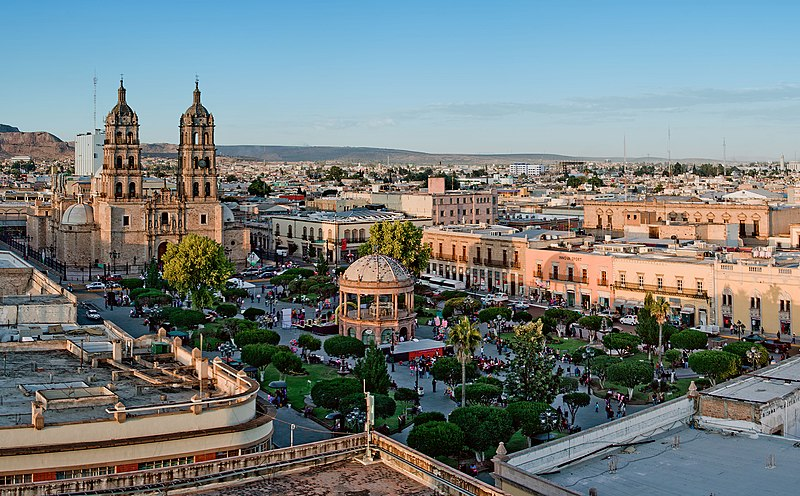

Durango es un estado ubicado en el norte-centro de México. Su capital es la ciudad de Durango, conocida por su arquitectura histórica y su rico patrimonio cultural. El estado tiene una superficie de 123,910 km² y una población de aproximadamente 1.8 millones de habitantes, según el censo de 2020. Durango se destaca por su diversidad geográfica y su tradición en la minería, agricultura y producción de mezcal.
La Feria Nacional de Durango es una de las festividades más representativas del estado, celebrada anualmente en septiembre. Durante esta feria, se realizan eventos culturales, exhibiciones ganaderas y presentaciones artísticas, atrayendo visitantes tanto locales como nacionales. Además, la Semana Santa es una tradición profundamente arraigada en Durango, con numerosas procesiones y celebraciones religiosas.
Entre los platillos típicos de Durango destacan:
| Dato 1 | Dato 2 | Dato 3 |
|---|---|---|
| Durango es uno de los principales productores de mezcal en México, con una producción artesanal reconocida internacionalmente. | El estado cuenta con una amplia riqueza minera, especialmente en plata, oro y zinc. | Durango tiene un vasto patrimonio arquitectónico, incluyendo haciendas y edificios históricos del siglo XVIII y XIX. |